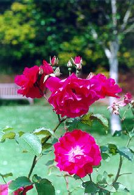
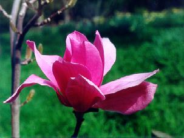
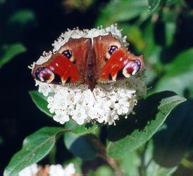

| ╤ра Вус - красуня з красунь
Палка, грац╕озна, мила З весняного сонця, з трояндових чар Природа ╖й голос створила. |
 |
| Волосся в не╖ навкруг чола -
На чорне сяйво схоже; Як оч╕ на тебе вона зведе То серце спинитися може. |
 |
| Як той метелик до кв╕тки летить
Щоб з келиха щастя пити Так лину душею я ╖й на уста На н╕жн╕, рожев╕╖ кв╕ти. |
 |